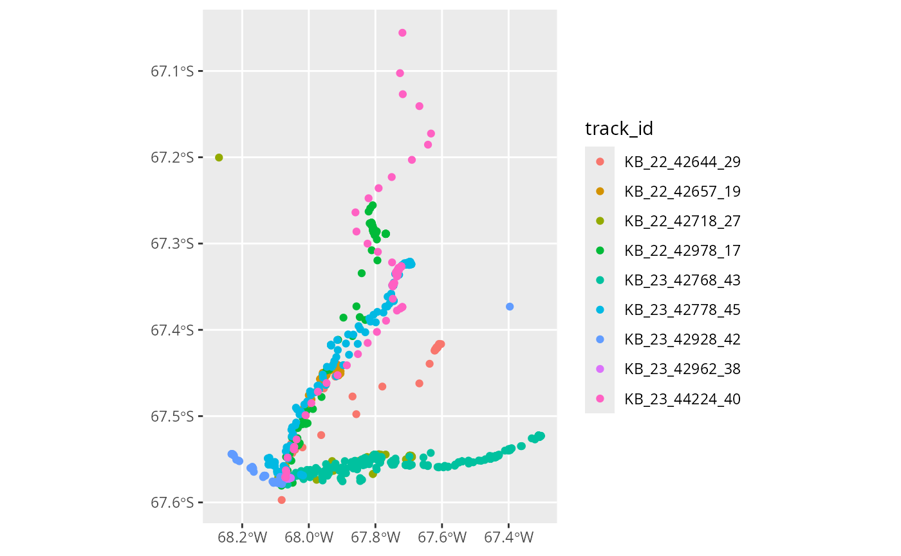
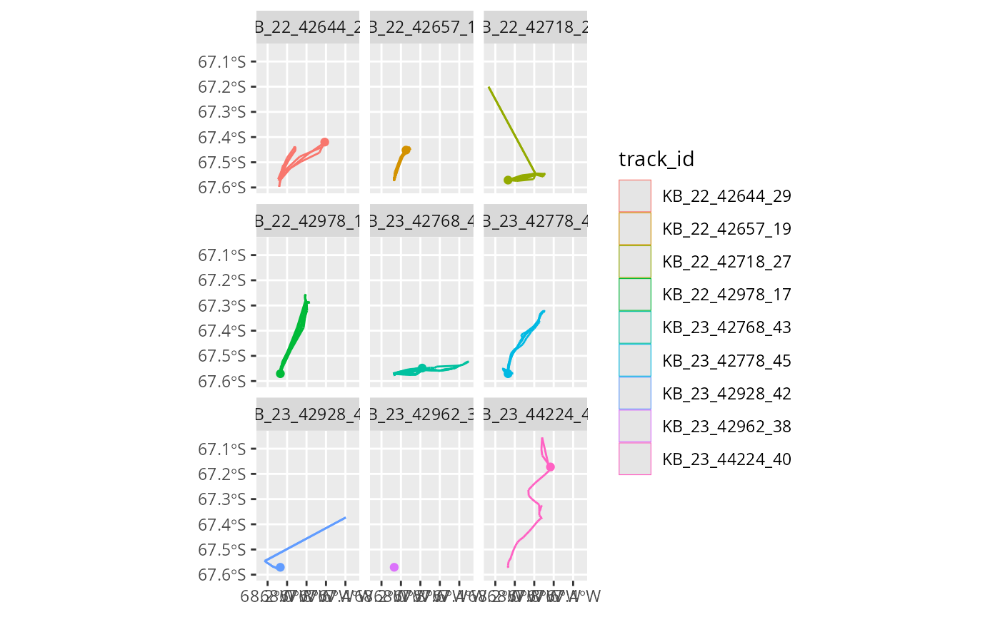
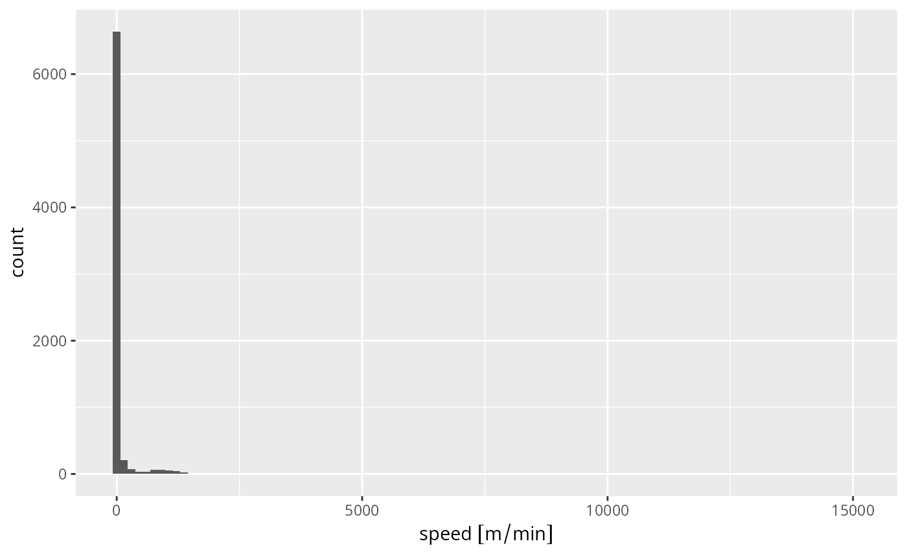
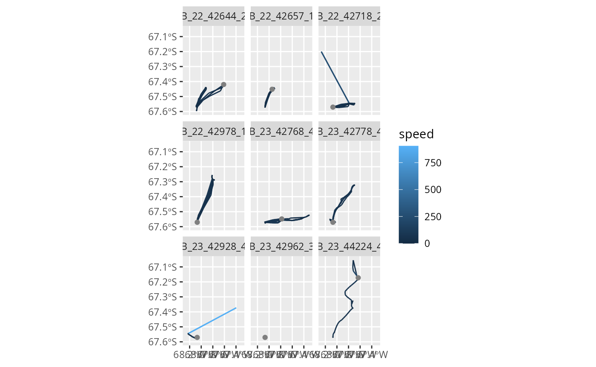
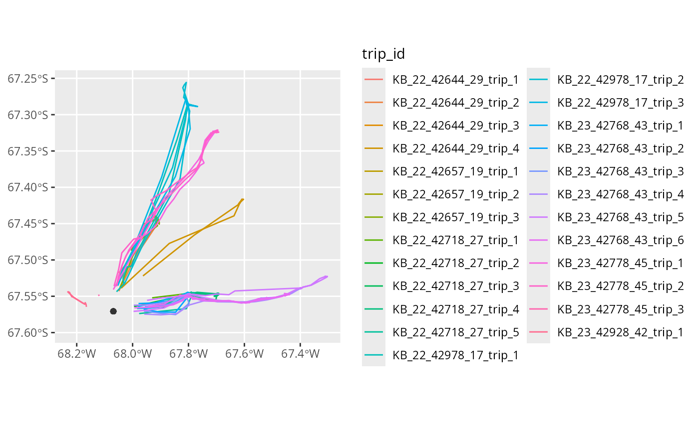
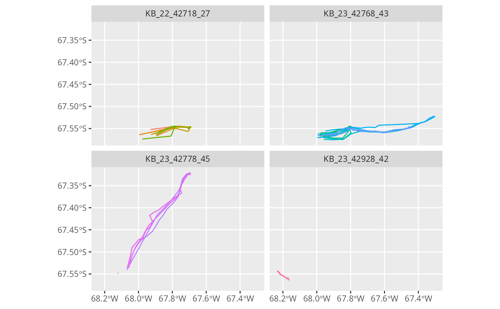
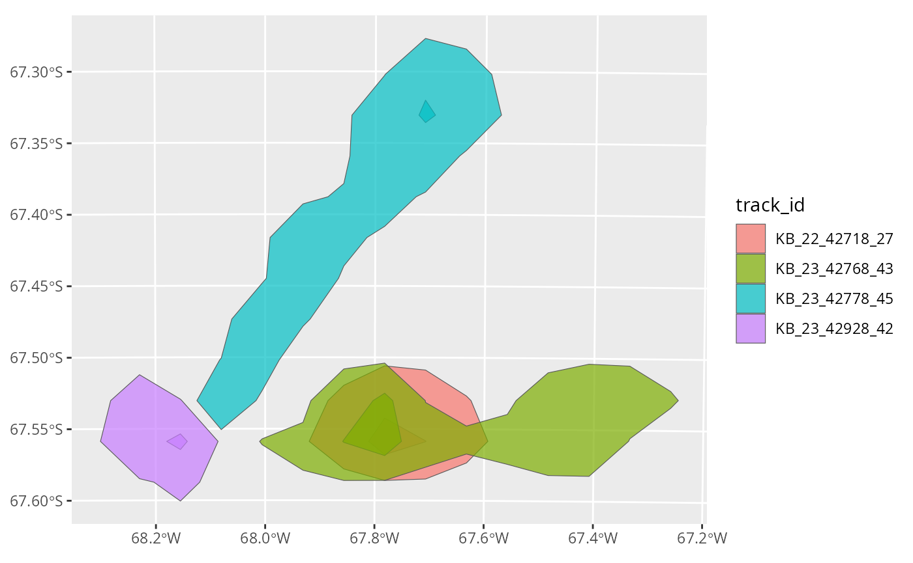
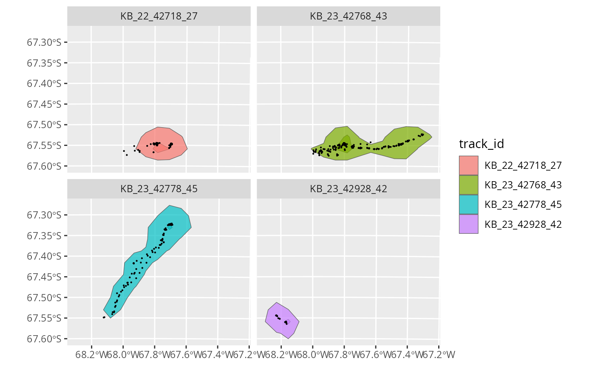
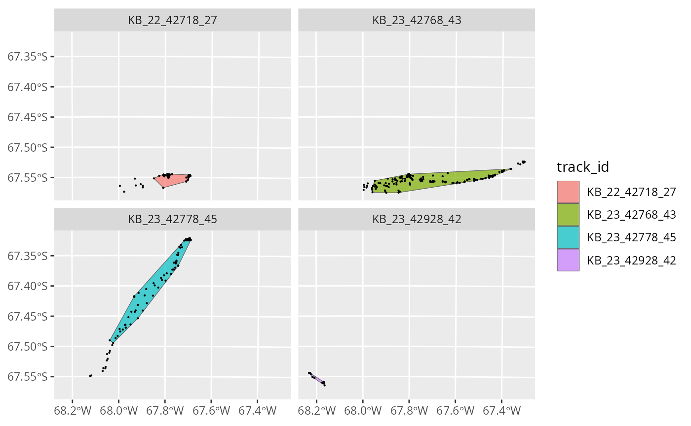

tidytracks.Rmdtidytracks
tidytracks uses tidy tables to represent movement data
based on move2 objects.
In a tidy table of tracks, each row represents an event, which is a time-stamped observation, associated with a location (and, optionally, extra data such as activity information).
Events are grouped into tracks. Initially a track might be all the locations from one deployment of a tracking device on an animal. However, for central place foragers, we might want to split this track into separate trips away from the central place. In this case, the unit of tracking (i.e. the new track) will become the trip, rather than the full deployment.
The metadata that describes each of these tracks is
stored in a separate table, which is linked to the event table by a
track_id_column. This means we do not have to repeat
information (such as the id or sex of an animal) for
each event, but we can use the
metadata of the track to store that
information.
This vignette will use an example dataset of GPS tracks from the
Antarctic shag Leucocarbo bransfieldensis, a seabird acting as
a central-place forager. This dataset contains 9 tracks with nearly
8,000 locations. Note that these are based on real data, but have been
modified to show the functionality of tidytracks. Please do
not use them for any real analyses of shag movement!
move2 object
In tidytracks, we start by reading a table of events
(e.g., GPS locations) from a CSV file or as existing
data.frame in R.
This table should contain at least the following columns: - one
column which is the track_id (i.e. the variable that groups
events into a track) - two columns representing the x and
y coordinates (e.g. longitude and
latitude) - a date-time column (or separate
date and time columns)
Additional columns of data will be stored in the events table if they have information that is specific to each event (i.e. the values are not unique within a given track, e.g. the temperature recorded at each location), or they will be moved to the metadata table if they are track specific (e.g. track_id, sex of the individual, colony coordinates, breeding status, etc.).
We start with a small data set of Antarctic Shags. We have a single
CSV. Each row must include information about the locations (in this case
latitude and longitude) and time (in this
case, separated into two columns, date_gmt and
time_gmt). Locations belonging to the same track are
identified by the same value in the track_id column (in
this example, as we only have one track per bird, the
track_id is the ring number of the bird). The CSV also
contains other columns of information about the tracks
(e.g. sex, colony, year), but
these are repeated for each event, so they will be moved to the metadata
table when we create the tidytracks object.
library(tidytracks)
#> Loading required package: move2
#> Loading required package: units
#> udunits database from /usr/share/xml/udunits/udunits2.xml
#> Registered S3 method overwritten by 'tidytracks':
#> method from
#> print.move2 move2
library(dplyr)
#>
#> Attaching package: 'dplyr'
#> The following objects are masked from 'package:stats':
#>
#> filter, lag
#> The following objects are masked from 'package:base':
#>
#> intersect, setdiff, setequal, union
library(ggplot2)
# load data called "shags" from package
data("shags_new", package = "tidytracks")Inspecting the events table, we have:
shags
#> A <move2> with `track_id_column` "track_id" and `time_column` "date_time"
#> Containing 9 tracks lasting on average 2e+05 secs in a
#> Simple feature collection with 7249 features and 2 fields
#> Geometry type: POINT
#> Dimension: XY
#> Bounding box: xmin: -68.26967 ymin: -67.5972 xmax: -67.30301 ymax: -67.0557
#> Geodetic CRS: WGS 84
#> First 10 features:
#> track_id date_time geometry
#> 1 KB_22_42644_29 2022-01-06 00:03:47 POINT (-67.86875 -67.47723)
#> 2 KB_22_42644_29 2022-01-06 00:13:41 POINT (-67.63724 -67.43931)
#> 3 KB_22_42644_29 2022-01-06 00:23:41 POINT (-67.61531 -67.42077)
#> 4 KB_22_42644_29 2022-01-06 00:33:41 POINT (-67.61504 -67.42081)
#> 5 KB_22_42644_29 2022-01-06 00:43:40 POINT (-67.6151 -67.42079)
#> 6 KB_22_42644_29 2022-01-06 00:53:39 POINT (-67.60892 -67.41631)
#> 7 KB_22_42644_29 2022-01-06 01:03:43 POINT (-67.60288 -67.41649)
#> 8 KB_22_42644_29 2022-01-06 01:13:45 POINT (-67.6144 -67.42043)
#> 9 KB_22_42644_29 2022-01-06 01:23:44 POINT (-67.61437 -67.4205)
#> 10 KB_22_42644_29 2022-01-06 01:33:44 POINT (-67.61427 -67.42052)
#> To see track metadata, use `show_meta()`We can see how each row in the table is an event, in this case a
time-stamped GPS location for a given bird, with the column
date_time providing the time and column
geometry defining the location. track_id (the
designated track_id_column) is the identifier that groups a
set of events into a single track.
The rest of the information was moved to the meta data table. We can inspect the meta data table as follows:
show_meta(shags)
#> track_id sex colony year species deployment_date
#> 1 KB_22_42644_29 Male Killingbeck 2022 antarctic_shag 04/01/2022
#> 2 KB_22_42657_19 Male Killingbeck 2022 antarctic_shag 03/01/2022
#> 3 KB_22_42718_27 Female Killingbeck 2022 antarctic_shag 03/01/2022
#> 4 KB_22_42978_17 Male Killingbeck 2022 antarctic_shag 03/01/2022
#> 5 KB_23_42768_43 Female Killingbeck 2023 antarctic_shag 30/12/2022
#> 6 KB_23_42778_45 Female Killingbeck 2023 antarctic_shag 30/12/2022
#> 7 KB_23_42928_42 Female Killingbeck 2023 antarctic_shag 30/12/2022
#> 8 KB_23_42962_38 Male Killingbeck 2023 antarctic_shag 30/12/2022
#> 9 KB_23_44224_40 Male Killingbeck 2023 antarctic_shag 04/01/2023
#> deployment_time_gmt colony_lat colony_lon status
#> 1 09:02:50 -67.57072 -68.06893 good
#> 2 20:07:13 -67.57072 -68.06893 good
#> 3 21:07:13 -67.57072 -68.06893 good
#> 4 20:37:03 -67.57072 -68.06893 good
#> 5 16:48:55 -67.57072 -68.06893 good
#> 6 13:41:16 -67.57072 -68.06893 good
#> 7 12:16:10 -67.57072 -68.06893 good
#> 8 12:32:33 -67.57072 -68.06893 unusable
#> 9 10:18:43 -67.57072 -68.06893 left_colony
#> colony_coord
#> 1 POINT (-68.06893 -67.57072)
#> 2 POINT (-68.06893 -67.57072)
#> 3 POINT (-68.06893 -67.57072)
#> 4 POINT (-68.06893 -67.57072)
#> 5 POINT (-68.06893 -67.57072)
#> 6 POINT (-68.06893 -67.57072)
#> 7 POINT (-68.06893 -67.57072)
#> 8 POINT (-68.06893 -67.57072)
#> 9 POINT (-68.06893 -67.57072)We have a track_id column that links back to the events
table, and then information about the sex and species of the bird, as
well as a column of coordinates for the colony location. In
tidytracks, all locations should be stored as
sfc_POINT geometries with a defined coordinate reference
system (CRS). Whilst this is done automatically for locations events,
location information in the metadata needs to converted after reading
the file:
# add geometry column (colony location point) to metadata
show_meta(shags) <- show_meta(shags) %>%
mutate(colony_coord = sf_point_col(x = colony_lon, y = colony_lat,
crs = 4326))
show_meta(shags)
#> track_id sex colony year species deployment_date
#> 1 KB_22_42644_29 Male Killingbeck 2022 antarctic_shag 04/01/2022
#> 2 KB_22_42657_19 Male Killingbeck 2022 antarctic_shag 03/01/2022
#> 3 KB_22_42718_27 Female Killingbeck 2022 antarctic_shag 03/01/2022
#> 4 KB_22_42978_17 Male Killingbeck 2022 antarctic_shag 03/01/2022
#> 5 KB_23_42768_43 Female Killingbeck 2023 antarctic_shag 30/12/2022
#> 6 KB_23_42778_45 Female Killingbeck 2023 antarctic_shag 30/12/2022
#> 7 KB_23_42928_42 Female Killingbeck 2023 antarctic_shag 30/12/2022
#> 8 KB_23_42962_38 Male Killingbeck 2023 antarctic_shag 30/12/2022
#> 9 KB_23_44224_40 Male Killingbeck 2023 antarctic_shag 04/01/2023
#> deployment_time_gmt colony_lat colony_lon status
#> 1 09:02:50 -67.57072 -68.06893 good
#> 2 20:07:13 -67.57072 -68.06893 good
#> 3 21:07:13 -67.57072 -68.06893 good
#> 4 20:37:03 -67.57072 -68.06893 good
#> 5 16:48:55 -67.57072 -68.06893 good
#> 6 13:41:16 -67.57072 -68.06893 good
#> 7 12:16:10 -67.57072 -68.06893 good
#> 8 12:32:33 -67.57072 -68.06893 unusable
#> 9 10:18:43 -67.57072 -68.06893 left_colony
#> colony_coord
#> 1 POINT (-68.06893 -67.57072)
#> 2 POINT (-68.06893 -67.57072)
#> 3 POINT (-68.06893 -67.57072)
#> 4 POINT (-68.06893 -67.57072)
#> 5 POINT (-68.06893 -67.57072)
#> 6 POINT (-68.06893 -67.57072)
#> 7 POINT (-68.06893 -67.57072)
#> 8 POINT (-68.06893 -67.57072)
#> 9 POINT (-68.06893 -67.57072)Note that move2 objects don’t have to be ordered by
time, but for many analysis, this is a requirement. We can order the
data by time using the tt_order_time() function:
shags <- shags %>% tt_order_time()Functions that start with tt_ are specific to tidy
tables of tracks (i.e. move2 objects), and they operate on
the whole object.
To plot the data with the ggplot2 package, we can use
the geom_event_point() function to plot the locations of
each event:
library(ggplot2)
ggplot() +
geom_event_point(data = shags, aes(color = track_id))
We can explore what each individual is doing by plotting the
locations of each individual separately with facet_wrap. In
this example, instead of plotting individual locations as points, we can
also use geom_event_path() to plot the paths between the
locations:
ggplot() +
geom_event_path(data = shags, aes(color = track_id)) +
facet_wrap(~track_id)
We can see that bird 'KB_23_42962_38' moved very little
(or not at all) during the tracked period.
geom_event_point() and geom_event_path()
are compatible with coord_sf() to project the map:
ggplot() +
geom_event_point(data = shags, aes(color = track_id)) +
coord_sf(crs = '+proj=aeqd +lon_0=-68 +lat_0=-67 +units=m +datum=WGS84 +no_defs')As we saw above, tt_* functions are specific to and
operate on the whole table of tracks (aka the move2
object), and often will return a complete table of tracks. There are
functions to clean the data using different algorithms
(e.g. tt_clean_mcconnell), or to split the data into trips
for central place foragers (e.g. tt_split_trips). We will
see those functions in action in a later section.
event_* functions, on the other hand, operate on events,
and return a vector of the same length as number of rows in the event
table (and thus can be use in mutate() operations). For
example, we can use event_speed() to calculate the speed of
each event. Note that, technically, the speed pertains to the segment
between two events, but for simplicity we will refer to it as the speed
of the event. For each track, event_speed() returns the
speed of each segment, padded with a final NA so that we have the same
number of rows as the original track.
So, we can add speed to our shags object with:
shags <- shags %>%
dplyr::mutate(speed = event_speed(.))Note the use of the . place-holder in the brackets of
event_speed() to pass the whole move2 object
to the function. This is only possible with a magrittr pipe
(%>%), and not with the base R pipe
(|>).
We can now visualise the distribution of speeds:
shags %>%
ggplot(aes(x = speed)) +
geom_histogram(bins = 100)
#> Warning: Removed 9 rows containing non-finite outside the scale range
#> (`stat_bin()`).
Note the message about 9 rows having been dropped; those are the 9
last events for which there is no distance. Also, functions in
tidytracks tend to return values with units, to avoid
conversion problems (in this case, meters per minute). Functions usually
have a units parameter that allows to change the units that
are returned (more details about working with units below).
The histogram above is suggests that there might be outliers in the data, as we seem to have a few events with very high speeds. We will see later how we can clean up the data using McConnell’s algorithm.
Finally, there are track_* functions, which operate on
the whole track, and will generally return a vector of length equal to
the number of tracks in the object. For example,
track_duration() returns the total duration of each
track:
shags %>%
track_duration()
#> Units: [d]
#> KB_22_42644_29 KB_22_42657_19 KB_22_42718_27 KB_22_42978_17 KB_23_42768_43
#> 2.9851273 3.1181250 3.1159144 3.1119792 3.4241319
#> KB_23_42778_45 KB_23_42928_42 KB_23_42962_38 KB_23_44224_40
#> 1.1472338 2.8075116 0.8113657 0.2744329If we wanted the same estimates in hours rather than days, we would simply say:
shags %>%
track_duration(units = "hours")
#> Units: [h]
#> KB_22_42644_29 KB_22_42657_19 KB_22_42718_27 KB_22_42978_17 KB_23_42768_43
#> 71.643056 74.835000 74.781944 74.687500 82.179167
#> KB_23_42778_45 KB_23_42928_42 KB_23_42962_38 KB_23_44224_40
#> 27.533611 67.380278 19.472778 6.586389This naming convention helps clarifying the scope of a given function, avoiding ambiguities.
For example, event_flag_mcconnell() will return a
logical vector indicating whether events are valid or whether they
should be filtered out using McConnell’s algorithm, whilst
tt_clean_mcconnell() will return a move2
object with the invalid events removed.
Similarly, event_distance() will return a vector of
distances between events (a vector of the same length as the rows of the
event column), while track_distance() will return the total
(cumulative) distance for each track (and thus a shorter vector of
length equal to the number of tracks in the object).
We can get an overview of the speeds of each step with:
shags %>%
summary()
#> track_id date_time geometry
#> KB_23_42768_43:2390 Min. :2022-01-04 00:07:13 POINT :7249
#> KB_23_42928_42:1983 1st Qu.:2022-12-30 17:33:28 epsg:4326 : 0
#> KB_23_42778_45: 808 Median :2022-12-31 12:46:20 +proj=long...: 0
#> KB_22_42657_19: 450 Mean :2022-10-04 23:54:30
#> KB_22_42718_27: 446 3rd Qu.:2023-01-01 15:15:43
#> KB_22_42978_17: 446 Max. :2023-01-04 22:28:30
#> (Other) : 726
#> speed
#> Min. : 0.000
#> 1st Qu.: 1.987
#> Median : 4.665
#> Mean : 59.515
#> 3rd Qu.: 12.599
#> Max. :15070.024
#> NA's :9Some of those speeds (>15000 m/minute) seem a bit high. We can check the units (to make sure we have them right):
units(shags$speed)
#> $numerator
#> [1] "m"
#>
#> $denominator
#> [1] "min"
#>
#> attr(,"class")
#> [1] "symbolic_units"Let’s recalculate them in units that might be more familiar to us.
shags <- shags %>%
mutate(speed = set_units(speed, "km/h"))
shags %>%
summary()
#> track_id date_time geometry
#> KB_23_42768_43:2390 Min. :2022-01-04 00:07:13 POINT :7249
#> KB_23_42928_42:1983 1st Qu.:2022-12-30 17:33:28 epsg:4326 : 0
#> KB_23_42778_45: 808 Median :2022-12-31 12:46:20 +proj=long...: 0
#> KB_22_42657_19: 450 Mean :2022-10-04 23:54:30
#> KB_22_42718_27: 446 3rd Qu.:2023-01-01 15:15:43
#> KB_22_42978_17: 446 Max. :2023-01-04 22:28:30
#> (Other) : 726
#> speed
#> Min. : 0.0000
#> 1st Qu.: 0.1192
#> Median : 0.2799
#> Mean : 3.5709
#> 3rd Qu.: 0.7559
#> Max. :904.2014
#> NA's :9Hmm, 900 km/h is much faster than typical flight speeds for a shag (European shags usually fly at speeds around 50–65 km/h; see e.g. Wanless et al. 1997).
Let’s plot the speed of each event:
ggplot() +
geom_event_path(
data = shags,
aes(color = speed)
) +
facet_wrap(~track_id)
It looks like there are a few GPS location errors here, resulting in unrealistic speeds.
We can remove locations characterised by unlikely speeds using the
McConnell’s algorithm (the same used by
trip::speedfilter()). Max speed can be set to an
appropriate number for the species we are working with. Shags have been
observed flying at 60km/h so we will set the maximum to 80. Note that we
can give the max_speed in any units we want, and they will
be automatically converted to the units in the object.
nrow(shags) # check number of events before filter
#> [1] 7249
# run the speed filter
shags <- shags %>%
tt_clean_mcconnell(max_speed = set_units(80, "km/h"))
nrow(shags) # check number of events after the filter
#> [1] 7238Note that tt_clean_mcconnell() is “destructive” and will
remove the points flagged by the algorithm. There is also a function
event_flag_mcconnell() which flags points without removing
them; see the advanced vignette for more details on how to use it (TODO
there is no advance vignette yet!!!).
Let us now recompute the speeds after running the filter (again, in km/h):
shags <- shags %>%
mutate(speed = event_speed(., units = "km/h"))
summary(shags)
#> track_id date_time geometry
#> KB_23_42768_43:2390 Min. :2022-01-04 00:07:13 POINT :7238
#> KB_23_42928_42:1982 1st Qu.:2022-12-30 17:32:33 epsg:4326 : 0
#> KB_23_42778_45: 802 Median :2022-12-31 12:47:23 +proj=long...: 0
#> KB_22_42657_19: 450 Mean :2022-10-04 21:52:37
#> KB_22_42978_17: 446 3rd Qu.:2023-01-01 15:15:35
#> KB_22_42718_27: 445 Max. :2023-01-04 22:28:30
#> (Other) : 723
#> speed
#> Min. : 0.0000
#> 1st Qu.: 0.1191
#> Median : 0.2788
#> Mean : 3.1538
#> 3rd Qu.: 0.7504
#> Max. :187.5769
#> NA's :9We still have some locations with unrealistic speeds, so let’s run the speed filter again.
TODO we still have unrealistic speeds - need to check where they’re coming from and how to explain/fix this.
nrow(shags) # check number of events before filter
#> [1] 7238
# run the speed filter
shags <- shags %>%
tt_clean_mcconnell(max_speed = set_units(80, "km/h"))
nrow(shags) # check number of events after the filter#
#> [1] 7237
# recompute speeds and check summary
shags <- shags %>%
dplyr::mutate(speed = event_speed(., units = "km/h"))
summary(shags)
#> track_id date_time geometry
#> KB_23_42768_43:2390 Min. :2022-01-04 00:07:13 POINT :7237
#> KB_23_42928_42:1982 1st Qu.:2022-12-30 17:32:31 epsg:4326 : 0
#> KB_23_42778_45: 801 Median :2022-12-31 12:48:19 +proj=long...: 0
#> KB_22_42657_19: 450 Mean :2022-10-04 21:35:16
#> KB_22_42978_17: 446 3rd Qu.:2023-01-01 15:15:43
#> KB_22_42718_27: 445 Max. :2023-01-04 22:28:30
#> (Other) : 723
#> speed
#> Min. : 0.0000
#> 1st Qu.: 0.1191
#> Median : 0.2788
#> Mean : 3.1431
#> 3rd Qu.: 0.7497
#> Max. :187.5769
#> NA's :9TODO- removing end speeds, did lizzie update this?
We can see that we have removed some locations with unrealistic speeds. Note that the McConnell algorithm does not simply remove steps above the threshold speed, but uses the root mean square speed for previous/next and 2nd previous to next point, thus allowing for individual steps that might have a speed just above the threshold if the subsequent point is not too far away.
Shags are central place foragers, and we now want to split the track
into trips. For this we need to define the colony location, and a buffer
around it. tt_split_trips() can take either a single colony
point, or one nest location per track (as a column in the metadata).
shags <- shags %>%
tt_split_trips(
centre_col = "colony_coord",
buffer_outbound = as_units(3, "km"),
buffer_inbound = as_units(3, "km"),
complete = TRUE # keep only complete trips
)If we now inspect the object, we can see that there is a new column,
trip_id, which is also used as the new
track_id_column in the move2 object:
shags
#> A <move2> with `track_id_column` "trip_id" and `time_column` "date_time"
#> Containing 25 tracks lasting on average 16333 secs in a
#> Simple feature collection with 1419 features and 4 fields
#> Geometry type: POINT
#> Dimension: XY
#> Bounding box: xmin: -68.23206 ymin: -67.5972 xmax: -67.30301 ymax: -67.25561
#> Geodetic CRS: WGS 84
#> First 10 features:
#> track_id date_time geometry
#> 1 KB_22_42644_29 2022-01-04 02:13:29 POINT (-68.00128 -67.48288)
#> 2 KB_22_42644_29 2022-01-04 02:23:25 POINT (-67.92074 -67.4395)
#> 3 KB_22_42644_29 2022-01-04 02:33:23 POINT (-67.92459 -67.44016)
#> 4 KB_22_42644_29 2022-01-04 02:43:22 POINT (-67.92551 -67.44076)
#> 5 KB_22_42644_29 2022-01-04 02:53:19 POINT (-67.92582 -67.44077)
#> 6 KB_22_42644_29 2022-01-04 03:03:47 POINT (-67.92556 -67.43966)
#> 7 KB_22_42644_29 2022-01-04 03:13:54 POINT (-67.92227 -67.4383)
#> 8 KB_22_42644_29 2022-01-04 03:23:48 POINT (-67.92339 -67.43963)
#> 9 KB_22_42644_29 2022-01-04 03:33:47 POINT (-67.92558 -67.44072)
#> 10 KB_22_42644_29 2022-01-04 03:43:46 POINT (-67.92602 -67.44081)
#> speed trip_id
#> 1 35.76314645 [km/h] KB_22_42644_29_trip_1
#> 2 1.08527464 [km/h] KB_22_42644_29_trip_1
#> 3 0.46583693 [km/h] KB_22_42644_29_trip_1
#> 4 0.08074146 [km/h] KB_22_42644_29_trip_1
#> 5 0.71048012 [km/h] KB_22_42644_29_trip_1
#> 6 1.22391286 [km/h] KB_22_42644_29_trip_1
#> 7 0.94465229 [km/h] KB_22_42644_29_trip_1
#> 8 0.91944088 [km/h] KB_22_42644_29_trip_1
#> 9 0.12662009 [km/h] KB_22_42644_29_trip_1
#> 10 1.27854229 [km/h] KB_22_42644_29_trip_1
#> To see track metadata, use `show_meta()`Let’s look at the metadata:
str(show_meta(shags))
#> 'data.frame': 25 obs. of 13 variables:
#> $ track_id : Factor w/ 9 levels "KB_22_42644_29",..: 1 1 1 1 2 2 2 3 3 3 ...
#> $ sex : chr "Male" "Male" "Male" "Male" ...
#> $ colony : chr "Killingbeck" "Killingbeck" "Killingbeck" "Killingbeck" ...
#> $ year : int 2022 2022 2022 2022 2022 2022 2022 2022 2022 2022 ...
#> $ species : chr "antarctic_shag" "antarctic_shag" "antarctic_shag" "antarctic_shag" ...
#> $ deployment_date : chr "04/01/2022" "04/01/2022" "04/01/2022" "04/01/2022" ...
#> $ deployment_time_gmt: chr "09:02:50" "09:02:50" "09:02:50" "09:02:50" ...
#> $ colony_lat : num -67.6 -67.6 -67.6 -67.6 -67.6 ...
#> $ colony_lon : num -68.1 -68.1 -68.1 -68.1 -68.1 ...
#> $ status : chr "good" "good" "good" "good" ...
#> $ colony_coord :sfc_POINT of length 25; first list element: 'XY' num -68.1 -67.6
#> $ trip_id : chr "KB_22_42644_29_trip_1" "KB_22_42644_29_trip_2" "KB_22_42644_29_trip_3" "KB_22_42644_29_trip_4" ...
#> $ trip_type : chr "complete" "complete" "complete" "complete" ...TODO update this paragraph now that we’re keeping all birds in: We can see that only individual KB_23_42778_45 performed proper central place trips, and specifically it made 3 trips. KB_23_44224_40 migrated away from the study area. KB_23_42962_38 never moved and was therefore filtered out.
How the trip splitting works:
Essentially, the buffer_outbound and
buffer_inbound arguments in tt_split_trips
define zones around the central place (colony) that an animal must cross
to be considered as starting or ending a trip. The
complete = TRUE argument ensures that only trips which both
leave and return to the colony (i.e., complete round trips) are
retained. As a result, any tracks that do not leave the buffer zone, or
trips that are not complete, are removed from the dataset.
ggplot() +
geom_sf(data = track_lines(shags), aes(color = trip_id)) +
geom_sf(data = show_meta(shags)$colony_coord, color = "grey20")
We can get a summary of our tracks with:
shags %>%
track_summary_stats(centre_col = "colony_coord")
#> # A tibble: 25 × 10
#> trip_id tot_duration tot_distance max_latitude min_latitude max_longitude
#> <chr> [d] [m] <dbl> <dbl> <dbl>
#> 1 KB_22_4264… 0.132 18309. -67.4 -67.5 -67.9
#> 2 KB_22_4264… 0.215 27071. -67.4 -67.5 -67.9
#> 3 KB_22_4264… 0 0 -67.6 -67.6 -68.1
#> 4 KB_22_4264… 0.285 46241. -67.4 -67.5 -67.6
#> 5 KB_22_4265… 0.280 13062. -67.4 -67.5 -67.9
#> 6 KB_22_4265… 0.280 14646. -67.4 -67.5 -67.9
#> 7 KB_22_4265… 0.230 23147. -67.4 -67.5 -67.9
#> 8 KB_22_4271… 0.170 7075. -67.5 -67.6 -67.8
#> 9 KB_22_4271… 0.121 15544. -67.5 -67.6 -67.8
#> 10 KB_22_4271… 0.273 16880. -67.5 -67.6 -67.7
#> # ℹ 15 more rows
#> # ℹ 4 more variables: min_longitude <dbl>, max_dist_centre [m],
#> # lat_at_max_dist_centre <dbl>, lon_at_max_dist_centre <dbl>Note that track_summary_stats() will return a tibble
with one row per track, rather than the usual vector with one element
per track that is produced by most track_* functions.
We will now filter the dataset to leave only the females, so that we
can then perform some analysis. This information is the meta table, so
we will use filter_by_meta() to filter the dataset:
If we wanted, we could use this information to filter the dataset, for example to only trips that were longer than a certain duration or distance threshold.
It is better to add the trip stats to the metadata table and use
filter_by_meta() or just get the trip_ids that
meet the criteria and filter directly on the move2
object?
TODO add this code once we’ve enabled updating the metadata table.
shags_females <- shags %>%
filter_by_meta(sex == "Female") # we should make all strings not capital
show_meta(shags_females)
#> track_id sex colony year species deployment_date
#> 1 KB_22_42718_27 Female Killingbeck 2022 antarctic_shag 03/01/2022
#> 2 KB_22_42718_27 Female Killingbeck 2022 antarctic_shag 03/01/2022
#> 3 KB_22_42718_27 Female Killingbeck 2022 antarctic_shag 03/01/2022
#> 4 KB_22_42718_27 Female Killingbeck 2022 antarctic_shag 03/01/2022
#> 5 KB_22_42718_27 Female Killingbeck 2022 antarctic_shag 03/01/2022
#> 6 KB_23_42768_43 Female Killingbeck 2023 antarctic_shag 30/12/2022
#> 7 KB_23_42768_43 Female Killingbeck 2023 antarctic_shag 30/12/2022
#> 8 KB_23_42768_43 Female Killingbeck 2023 antarctic_shag 30/12/2022
#> 9 KB_23_42768_43 Female Killingbeck 2023 antarctic_shag 30/12/2022
#> 10 KB_23_42768_43 Female Killingbeck 2023 antarctic_shag 30/12/2022
#> 11 KB_23_42768_43 Female Killingbeck 2023 antarctic_shag 30/12/2022
#> 12 KB_23_42778_45 Female Killingbeck 2023 antarctic_shag 30/12/2022
#> 13 KB_23_42778_45 Female Killingbeck 2023 antarctic_shag 30/12/2022
#> 14 KB_23_42778_45 Female Killingbeck 2023 antarctic_shag 30/12/2022
#> 15 KB_23_42928_42 Female Killingbeck 2023 antarctic_shag 30/12/2022
#> deployment_time_gmt colony_lat colony_lon status colony_coord
#> 1 21:07:13 -67.57072 -68.06893 good POINT (-68.06893 -67.57072)
#> 2 21:07:13 -67.57072 -68.06893 good POINT (-68.06893 -67.57072)
#> 3 21:07:13 -67.57072 -68.06893 good POINT (-68.06893 -67.57072)
#> 4 21:07:13 -67.57072 -68.06893 good POINT (-68.06893 -67.57072)
#> 5 21:07:13 -67.57072 -68.06893 good POINT (-68.06893 -67.57072)
#> 6 16:48:55 -67.57072 -68.06893 good POINT (-68.06893 -67.57072)
#> 7 16:48:55 -67.57072 -68.06893 good POINT (-68.06893 -67.57072)
#> 8 16:48:55 -67.57072 -68.06893 good POINT (-68.06893 -67.57072)
#> 9 16:48:55 -67.57072 -68.06893 good POINT (-68.06893 -67.57072)
#> 10 16:48:55 -67.57072 -68.06893 good POINT (-68.06893 -67.57072)
#> 11 16:48:55 -67.57072 -68.06893 good POINT (-68.06893 -67.57072)
#> 12 13:41:16 -67.57072 -68.06893 good POINT (-68.06893 -67.57072)
#> 13 13:41:16 -67.57072 -68.06893 good POINT (-68.06893 -67.57072)
#> 14 13:41:16 -67.57072 -68.06893 good POINT (-68.06893 -67.57072)
#> 15 12:16:10 -67.57072 -68.06893 good POINT (-68.06893 -67.57072)
#> trip_id trip_type
#> 1 KB_22_42718_27_trip_1 complete
#> 2 KB_22_42718_27_trip_2 complete
#> 3 KB_22_42718_27_trip_3 complete
#> 4 KB_22_42718_27_trip_4 complete
#> 5 KB_22_42718_27_trip_5 complete
#> 6 KB_23_42768_43_trip_1 complete
#> 7 KB_23_42768_43_trip_2 complete
#> 8 KB_23_42768_43_trip_3 complete
#> 9 KB_23_42768_43_trip_4 complete
#> 10 KB_23_42768_43_trip_5 complete
#> 11 KB_23_42768_43_trip_6 complete
#> 12 KB_23_42778_45_trip_1 complete
#> 13 KB_23_42778_45_trip_2 complete
#> 14 KB_23_42778_45_trip_3 complete
#> 15 KB_23_42928_42_trip_1 completeWe can now plot the trips:
ggplot() +
geom_track_path(
data = shags_females,
aes(color = trip_id)
) +
facet_wrap(~track_id) + theme(legend.position="none")
To estimate home ranges, we need to project the data to an equal area
projection. We can use the sf::st_transform() function to
do this:
shags_females_proj <- shags_females %>%
sf::st_transform(crs = "+proj=aeqd +lon_0=-68 +lat_0=-67 +units=m +datum=WGS84 +no_defs")We can now estimate the home range using Kernel Density Estimation
(KDE). The default smoothing parameter (h) in the tt_hr_kde
function is set to “h_ref_mean”. The bandwidth for the kernel density
estimation can be either a number, or “h_ref_indiv” for using the
reference bandwidth for each individual, or “h_ref_mean” for using the
mean bandwidth for all individuals (the default).
We want to estimate the home range for each bird, so we will group by
track_id:
shags_females_kde is an sf object, with
estimates of the area (in the units of the projection, in this case m^2)
and a geometry column:
shags_females_kde
#> Simple feature collection with 8 features and 10 fields
#> Geometry type: MULTIPOLYGON
#> Dimension: XY
#> Bounding box: xmin: -12822.33 ymin: -66981.38 xmax: 32163.26 ymax: -30897.75
#> Projected CRS: PROJCRS["unknown",
#> BASEGEOGCRS["unknown",
#> DATUM["World Geodetic System 1984",
#> ELLIPSOID["WGS 84",6378137,298.257223563,
#> LENGTHUNIT["metre",1]],
#> ID["EPSG",6326]],
#> PRIMEM["Greenwich",0,
#> ANGLEUNIT["degree",0.0174532925199433],
#> ID["EPSG",8901]]],
#> CONVERSION["unknown",
#> METHOD["Azimuthal Equidistant",
#> ID["EPSG",1125]],
#> PARAMETER["Latitude of natural origin",-67,
#> ANGLEUNIT["degree",0.0174532925199433],
#> ID["EPSG",8801]],
#> PARAMETER["Longitude of natural origin",-68,
#> ANGLEUNIT["degree",0.0174532925199433],
#> ID["EPSG",8802]],
#> PARAMETER["False easting",0,
#> LENGTHUNIT["metre",1],
#> ID["EPSG",8806]],
#> PARAMETER["False northing",0,
#> LENGTHUNIT["metre",1],
#> ID["EPSG",8807]]],
#> CS[Cartesian,2],
#> AXIS["(E)",east,
#> ORDER[1],
#> LENGTHUNIT["metre",1,
#> ID["EPSG",9001]]],
#> AXIS["(N)",north,
#> ORDER[2],
#> LENGTHUNIT["metre",1,
#> ID["EPSG",9001]]]]
#> # A tibble: 8 × 11
#> track_id method h xmin ymin xmax ymax res level area
#> <chr> <chr> <dbl> <dbl> <dbl> <dbl> <dbl> <dbl> <dbl> [m^2]
#> 1 KB_22_42718_27 kde 1423. -49540. -92547. 71329. -6666. 3181. 0.5 6.42e6
#> 2 KB_22_42718_27 kde 1423. -49540. -92547. 71329. -6666. 3181. 0.95 8.87e7
#> 3 KB_23_42768_43 kde 1423. -49540. -92547. 71329. -6666. 3181. 0.5 1.28e7
#> 4 KB_23_42768_43 kde 1423. -49540. -92547. 71329. -6666. 3181. 0.95 1.81e8
#> 5 KB_23_42778_45 kde 1423. -49540. -92547. 71329. -6666. 3181. 0.5 1.13e6
#> 6 KB_23_42778_45 kde 1423. -49540. -92547. 71329. -6666. 3181. 0.95 2.03e8
#> 7 KB_23_42928_42 kde 1423. -49540. -92547. 71329. -6666. 3181. 0.5 9.78e5
#> 8 KB_23_42928_42 kde 1423. -49540. -92547. 71329. -6666. 3181. 0.95 5.31e7
#> # ℹ 1 more variable: geometry <MULTIPOLYGON [m]>We could easily change the units of the area with
set_units():
shags_females_kde %>%
mutate(area = set_units(area, "km^2")) %>%
select (track_id, level, area)
#> Simple feature collection with 8 features and 3 fields
#> Geometry type: MULTIPOLYGON
#> Dimension: XY
#> Bounding box: xmin: -12822.33 ymin: -66981.38 xmax: 32163.26 ymax: -30897.75
#> Projected CRS: PROJCRS["unknown",
#> BASEGEOGCRS["unknown",
#> DATUM["World Geodetic System 1984",
#> ELLIPSOID["WGS 84",6378137,298.257223563,
#> LENGTHUNIT["metre",1]],
#> ID["EPSG",6326]],
#> PRIMEM["Greenwich",0,
#> ANGLEUNIT["degree",0.0174532925199433],
#> ID["EPSG",8901]]],
#> CONVERSION["unknown",
#> METHOD["Azimuthal Equidistant",
#> ID["EPSG",1125]],
#> PARAMETER["Latitude of natural origin",-67,
#> ANGLEUNIT["degree",0.0174532925199433],
#> ID["EPSG",8801]],
#> PARAMETER["Longitude of natural origin",-68,
#> ANGLEUNIT["degree",0.0174532925199433],
#> ID["EPSG",8802]],
#> PARAMETER["False easting",0,
#> LENGTHUNIT["metre",1],
#> ID["EPSG",8806]],
#> PARAMETER["False northing",0,
#> LENGTHUNIT["metre",1],
#> ID["EPSG",8807]]],
#> CS[Cartesian,2],
#> AXIS["(E)",east,
#> ORDER[1],
#> LENGTHUNIT["metre",1,
#> ID["EPSG",9001]]],
#> AXIS["(N)",north,
#> ORDER[2],
#> LENGTHUNIT["metre",1,
#> ID["EPSG",9001]]]]
#> # A tibble: 8 × 4
#> track_id level area geometry
#> <chr> <dbl> [km^2] <MULTIPOLYGON [m]>
#> 1 KB_22_42718_27 0.5 6.42 (((9304.495 -63359.92, 8057.281 -62329.62, 9304.…
#> 2 KB_22_42718_27 0.95 88.7 (((6123.731 -64476.35, 3425.702 -62329.62, 4888.…
#> 3 KB_23_42768_43 0.5 12.8 (((6123.731 -62407.11, 6035.993 -62329.62, 6123.…
#> 4 KB_23_42768_43 0.95 181. (((-237.7978 -62586.42, -436.8338 -62329.62, -23…
#> 5 KB_23_42778_45 0.5 1.13 (((12485.26 -37461.72, 11972.33 -36883.51, 12485…
#> 6 KB_23_42778_45 0.95 203. (((-3418.562 -61407.66, -5315.612 -59148.86, -35…
#> 7 KB_23_42928_42 0.5 0.978 (((-6599.326 -62962.7, -7666.772 -62329.62, -659…
#> 8 KB_23_42928_42 0.95 53.1 (((-9780.09 -65238.17, -12822.33 -62329.62, -120…We can plot the home ranges:

We can add actual events with:
ggplot() +
geom_sf(
data = shags_females_kde,
aes(fill = track_id), alpha = 0.7
) +
geom_event_point(
data = shags_females_proj,
size = 0.1
) +
facet_wrap(~track_id)
To get a minimum convex polygon covering 95% of the data, we can use:
We can plot the MCPs with:
ggplot() +
geom_sf(
data = shags_females_mcp,
aes(fill = track_id), alpha = 0.7
) +
geom_event_point(
data = shags_females_proj,
size = 0.1
) +
facet_wrap(~track_id)
We can save our move2 object with the
tt_write_data() function, which can save the events and
meta data either separately or as a single CSV text file.
##TODO eample of code (saving to the temp directory) tempfile(fileext = “.csv”)